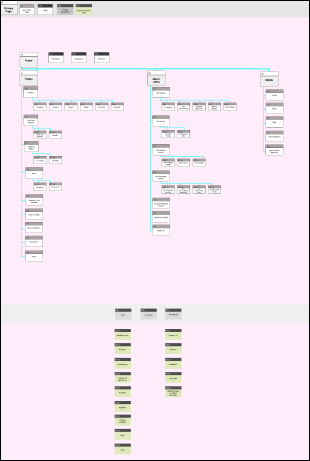

When tasked with redesigning a government website, I chose to take up the challenge of digging into the US Department of Agriculture’s current design. Upon initial inspection, I quickly began to realize the magnitude of information on the site and how confusing navigating through all that data could be. Thus, I based my interviews and usability testing on the restructuring of the navigation system and ways to improve it.


The main user who is visiting this site is the American farmer trying to carve out the dream of entrepreneurship in today’s ever changing regulatory driven market. He has to stay on top of changes to both state and national policies in order to produce a product that can be sold across the U.S.
Jacob is visiting the USDA website to know the national guidelines and regulations for growing crops and trying to stay ahead of upcoming regulatory changes to state and national requirements for organic food production. If find it hard to certain information, and some places at the website takes him to outside links that he is not aware of.
As part of the research I wanted to find out if Jacob is able to find information about the laws of growing crops in his state. Some of the usability issues that I thought Jacob might have: -Understanding where the farming section is located. -Finding the specific crops my user wants to learn more about. -Seeing if my user knows how to go back to the main page. -Seeing if my user knows how to contact to someone for assistance on the website.
Before I started to redesign the website,as part of the research, I evaluated the website and it's features in order to learn more about what is working and what is not functioning well in the website both on Mobile and the desktop version. Here are some of the pain points that I found: *There are a lot of categories that are not clear in their meaning. *There are links that appear to take you to another page, but actually bring you to a completely separate website. Often these transitions are unnoticeable. *Some of the content is unorganized and some topics should be combined together for simplification.

As a part of the evaluation, there was for color accessibility testing to make sure the main interaction colors on the website are working for people with disabilities.
In order to evaluate and redesign the information architecture on the website we used the open card sorting method, a method that help us understand the logic and path our user takes while seeing the categories on the existing website. Jacob was given a stack of cards with all the categories of the website, and then asked to group those cards together in any way that he wanted. After that Jacob created labels for the groups that he created. Using this process I was attempting to learn the navigation issues with the website that my user is dealing with, and if all the categories are clear to him. I was also trying to see if there is a need for some categories to be combined in order to make the navigation process simpler for the user.

After creating new categories for the navigation based on the card sorting, I created a new site map.
The new site Map was a result of some of the categories combined together in order to simplify the navigation process for the user, and avoid him being overwhelmed with a multitude of options.
In order to narrow down a look for the site, I began by creating a mood board that reflected what directions I saw as potentially successful design components and color palates. The American farmer was always my primary theoretical user; thus, I drew inspiration from places that I perceived a farmer would look. I eventually settled on a clean and minimalistic interpretation of a farmer’s market.